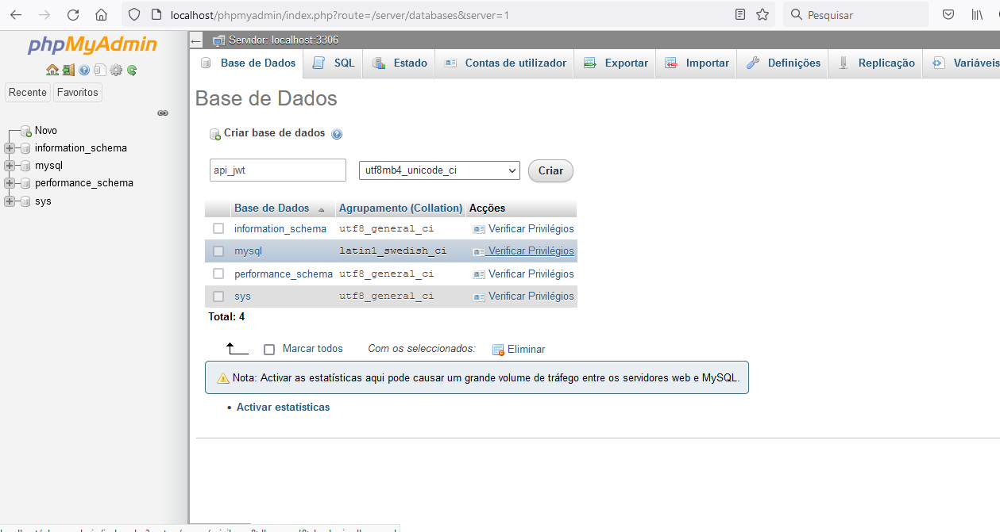

14º) Gerar uma Chave Secreta
Acesse o arquivo .env para verificar se a chave foi gerada

login
Listar Dados
logout
Acesse o Localhost
Lembre-se de verificar a collation do seu laravel em config/database.php, a collation do seu banco deve ser a mesma do laravel.
Criando o Banco de Dados "api_jwt"
Configure o Arquivo .env
Acesse a Pasta da Aplicação(api_laravel_9_jwt)
Baixa os arquivos de autenticação
instalar o pacote de autenticação.
Execute o comando abaixo para instalar o npm. Ele irá gerar arquivos CSS e js min.
Execute a Migrate
Email = joao1234@gmail.com
Senha = joao1234
Crie uma migrate e uma model
--php artisan make:model listar_livros -mAdicione o Código Abaixo na Migrate listar_livros(database/migrate)
Executa a Migrate
--php artisan migrateAcesse controller/api
Entra em routes/api.php
teste = http://localhost/api_laravel_9_jwt/public/api/livros
https://packagist.org/packages/tymon/jwt-auth#dev-develop
Baixe o jwt para a sua Aplicação
--composer require tymon/jwt-auth dev-developEntre no config/app.php e coloque o link abaixo dentro dos Providers
Acesse o arquivo .env para verificar se a chave foi gerada
Acesse models/User.php
Insira o implements JWTSubject a classe
Acesse models/User.php
Abre o config/auth.php
Adicione Api ao Guards. Abaixo de web
Adicione o Código Abaixo
Entre em routes/api.php
Testar no Postman = http://localhost/api_laravel_9_jwt/public/api/user_token
Acesse http/Middleware/apiProtectedRoute e Adicione o Código Abaixo
vai no http/kernel.php e dá um nome para o middleware
Entra em Route/api.php
Entra no controller/api/AuthController.php e adiciona o código abaixo
Entra em Route/api.php